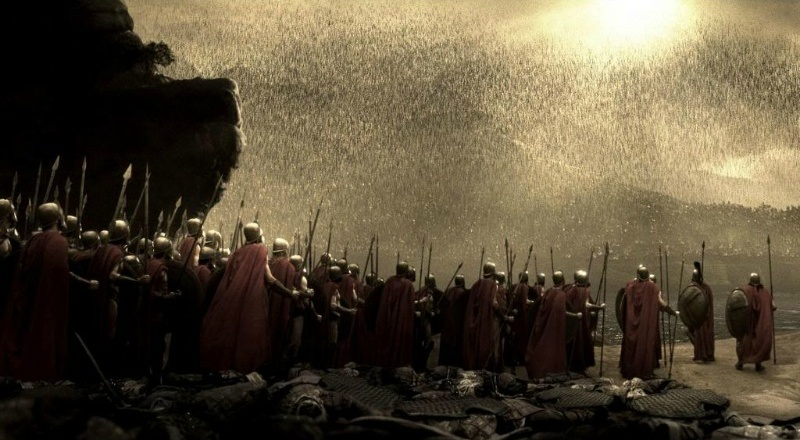
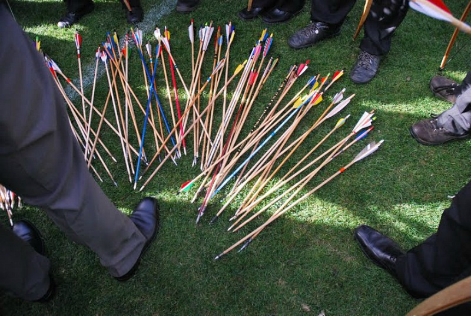
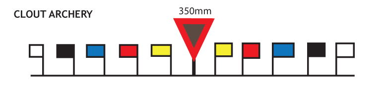

Clout Archery
Clout archery is a fun, extreme form of archery that differs from typical target archery in many ways. It’s a throw-back to medieval warriors who lobbed arrows at their enemies. Think: a sky raining arrows like in the movie “300.”

It’s a dramatic sport to watch, and much safer than it first looks. World Archery’s clout guidelines require archers to shoot a round of three arrows within two minutes, or six arrows within four minutes. Up to 20 archers shoot from the line at once, and in the United States, all archers shoot in one direction.
Clout is typically offered in the United States as a fun shoot between rounds at major tournaments like the National Field Archery Association Outdoor Nationals/U.S. Open. Rules require significant overshoot space to avoid damaging property. Clout archery is more popular in England and Australia, but if it continues gaining popularity, you could get to try this extreme – and extremely fun – archery sport soon. Bonus: airbrushed abs are not required.
CLOUT ARCHERY: THE BASICS
FORM
The most noticeable difference between clout rounds and tournament archery is that archers lob arrows at the sky while aiming for targets on the ground. For most types of archery, a fundamental rule is to avoid a “sky draw,” which is typically needed by archers trying to draw a bow of too much draw weight.
DISTANCE
Typically, competitive archers shoot targets from about 70 meters. Clout archers aim and shoot at targets up to twice that distance. Clout archers shoot from:
185 meters – compound men
165 meters – recurve men and compound women
125 meters – recurve women, all juniors and cadets
110 meters – cubs

TARGET
In clout archery, archers aim at a flag on the ground known as “the clout.” Each flag consists of a piece of colored fabric not exceeding 80 centimeters high and 30 centimeters wide on a wooden pole. The flag is 50 centimeters or less from the ground. Targets are circles positioned on the ground, surrounding a marker flag.
SCORING
Clout archers shoot six arrows six times for 36 arrows total. A rope with a loop is placed on the end of the flag pole. The rope is divided into scoring zones:
Gold: 5 points
Red: 4 points
Blue: 3 points
Black: 2 points
White: 1 point

The place where the arrow enters the ground is taken as its score. A judge walks the rope around the target area. Any arrows falling in a scoring zone marked on the rope are removed and, when the full circle is complete, laid out on the rope on the corresponding scoring colors. All archers in turn point to their arrows and call out the scores in descending order.
#Article from Archery 360 Magazine
Read More
> Target Archery> Field Archery
> 3D Archery
> Traditional Archery
> Flight Archery